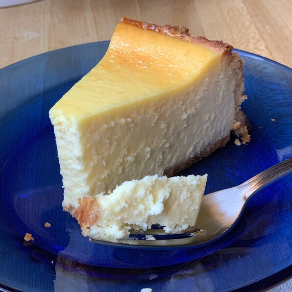

New York Cheesecake

Description
An amazing, fluffy cheesecake that will straight up melt in your mouth. This cheesecake is too good that even
your cat will like it. (Just dont include chocolate as topping; they're toxic!) This new york cheesecake has a
texture
that is so distinct from others. Its scrumptious, fluffy looks will infatuate you with the layers of flavor
that will take you to depths.
Who wouldn't want a good cheesecake? It's a type of cake that will just melt in your mouth not to mention the
amazing flavor this treat offers. This is the ultimate recipe for a new york style cheesecake that will open the
eyes of your guests. They might even tear up overwhelmed by the depth of its flavor. In a good way, of course.
Ingredients
- 1 1/2 cups of AP flour
- 1/3 cp white sugar
- 1 egg beaten
- 1/2 cup butter softened
- 2 1/2 pounds cream cheese softened
- 1 3/4 cups white sugar
- 3 tbsp AP flour
- 5 eggs
- 2 egg yolks
- 1/4 cup heavy whipping cream
Steps
- Preheat oven to 400 degrees farenheit. Lightly coat a 10 inch springform pan with spray oil. You can also
use a 9x13 inch pan
- To make the crust: Combine 1 1/2 cups flour, 1/3 cup sugar, 1 egg, and 1/2 cup butter or margarine. Spread
to the edges of the pan. Prick all over with a fork, then bake 15 minutes at 400 degrees farenheit. Allow to
cool.
- Increase oven temperature to 475 degrees farenheit. In a large bowl, combine cream cheese, 1 3/4 cups sugar,
3 tbsp flour, 5 eggs and the yolks and mix thoroughly. Add cream and mix only enough to blend.
- Pour filling over crust and bake for 10 minutes at 475 degrees farenheit. Reduce temperature to 200 degrees
farenheit and continue to bake for one hour. Turn oven off, but leave cake in for another hour. Don't worry
if it looks a little jiggly in the center.
- Chill overnight. This is imperative! If desired, top with your favorite fruit or serve plain.